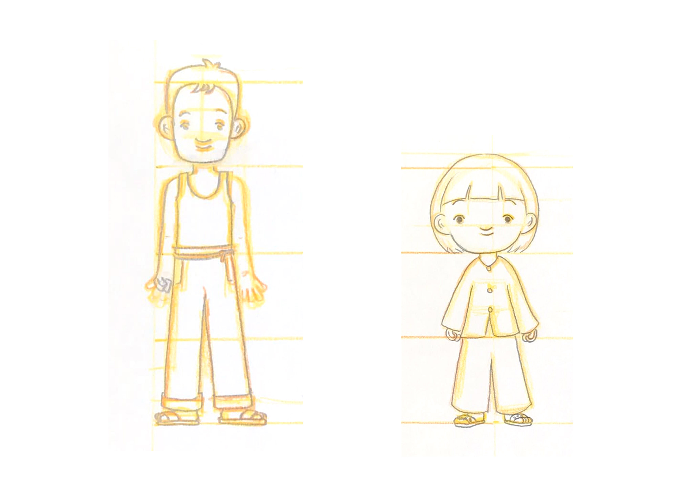
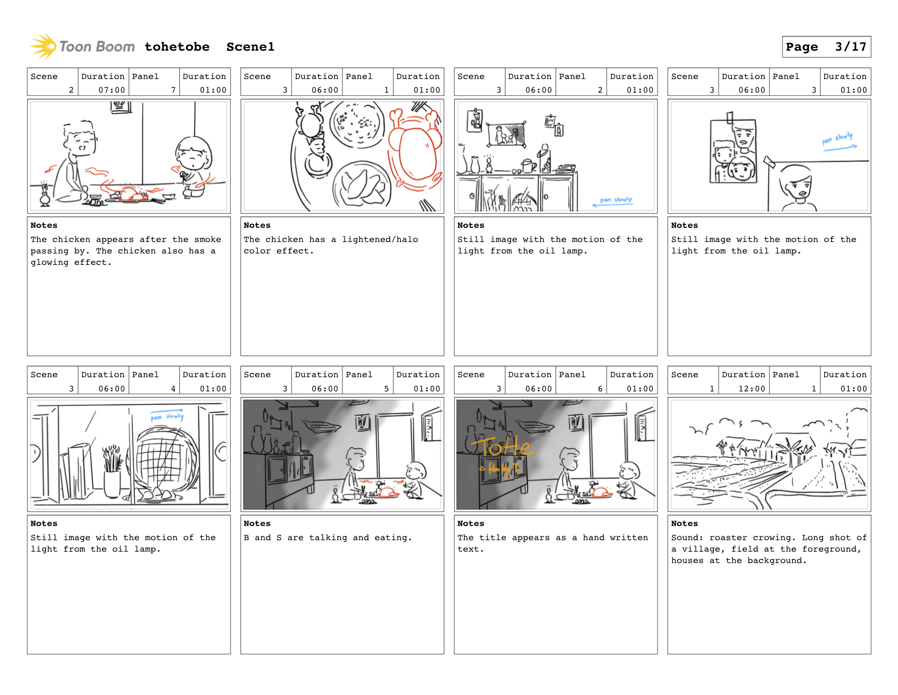
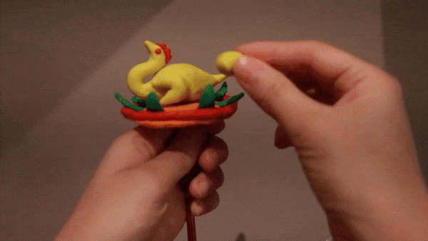
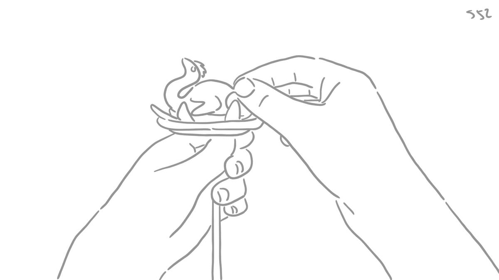
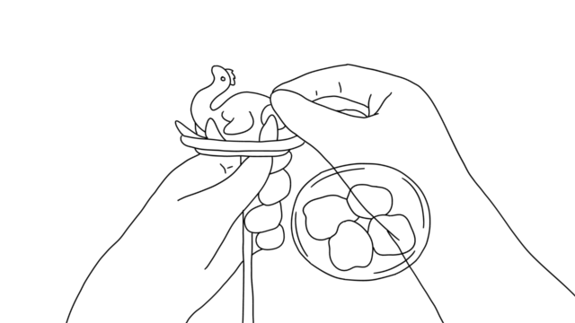
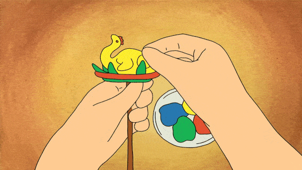

PROCESS
1. Character design
The character design is influenced by the appearance of my family and friends. They all have similar Vietnamese characteristics of big nose, yellow skin, and black hair. For animating the characters, click the image below.
2. Storyboard
The storyboard is illustrated using Storyboard Pro. It lays out every shot in the film.
3. 3D model
The background of the house is modeled using SketchUp Pro to portray the exact dimension and perspective of the background. The properties in the house are taken from various sources from SketchUp 3D Warehouse. For viewing the 3D model, click the arrow on the left of the image to choose from orbit, pan, and zoom.
4. Background
The backgrounds are traced from the 3D models and painted with gouache.

5. Video reference
Every action in the film is animated based on video referenced.
6. Animation
Using the referenced video, the actions in the film are sketched using Toon Boom Harmony to match the appearance of the character.
7. Clean-up
The animation draft is then cleaned up using a clean, thin, black line.
8. Color
After cleaning up the animation, the characters are colored and the backgrounds are lit and shaded.
